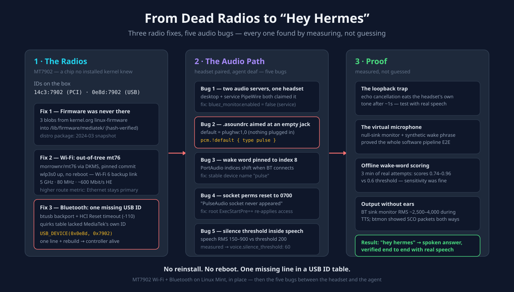

I Gave My AI Agent Ears on Linux: Five Audio Bugs Between a Bluetooth Headset and a Self-Hosted Assistant

Three radio fixes, five audio bugs. Every single one found by measuring, not guessing.
My home server had been up for 46 days straight. It runs an AI agent gateway, a dashboard, a self-hosted search stack in Docker, a couple of Caddy sites, Tailscale, and seven Telegram bot profiles. It briefs me on markets every morning and publishes articles on a schedule. One thing it had never done, not once since the day I plugged it in: connect to Wi-Fi or Bluetooth.
The radios were dead from day one. Ethernet carried everything, and servers love Ethernet — but I'd been circling a bigger goal: walk into the room, say "hey hermes," and hear the answer in a Bluetooth headset. A voice assistant that can't hear you and can't talk back is just a server with opinions.
So I set aside a weekend to fix it. The plan was: get the radios working, pair a headset, done by lunch. The radios took three fixes. The headset took five more bugs, stacked like a bad lasagna. Every single one was found by measuring, not guessing — and that's the part worth writing down.
First, the Temptation: Wipe It and Reinstall
When Wi-Fi doesn't work on Linux, the reflex is: newer distro, newer kernel, problem gone. My first idea was exactly that — wipe the box and move to Omarchy, DHH's Arch + Hyprland setup, betting that a fresher kernel would handle the radios.
I'm glad I didn't. Three reasons, in increasing order of importance:
- It needs physical presence. USB stick, disk wipe, hands on the machine. This server runs live services around the clock; it had 46 days of uptime for a reason.
- Omarchy is Wayland-only. My agent's computer-use and voice tooling hangs off the X11 desktop session. I'd have traded a radio problem for a display-server problem.
- A new distro only really buys you a newer kernel and newer firmware — and both of those can be replaced in place, without touching anything else.
Before you change distros over a hardware problem, identify the actual chip.
lspciandlsusbcost nothing. A reinstall costs you a weekend and a restore-from-backup evening.
The Chip Wasn't the Chip I Assumed
AMD mini PCs of this class usually ship a MediaTek MT7922 — well supported, boring, works everywhere. Mine didn't. lspci -nn showed PCI ID 14c3:7902, and lsusb showed the Bluetooth half at 0e8d:7902. That's an MT7902, a newer part, and the difference matters:
- No kernel installed on the machine — including the 7.0 series sitting in /boot — listed
14c3:7902inmt7921e's module aliases. MT7902 support landed upstream in Linux 7.1. - The distro's
linux-firmwarepackage was a 2024-03 snapshot. The MT7902 firmware blobs only shipped in the 2026-03 firmware release. - Bluetooth was the saddest part: the controller reported an all-zeros address, sat DOWN, and the in-tree driver logged
Unsupported hardware variant (00007902).
So: no driver that knows the chip, and no firmware for the chip. Nothing a reinstall of the same distro generation would have fixed — the parts simply hadn't shipped yet. Here's how each gap got closed, in place.
Fix One: The Firmware Was Never There
Three blobs from kernel.org's linux-firmware tree, copied into /lib/firmware/mediatek/:
WIFI_MT7902_patch_mcu_1_1_hdr.bin
WIFI_RAM_CODE_MT7902_1.bin
BT_RAM_CODE_MT7902_1_1_hdr.binI verified the hashes matched the copies in the community driver repo before trusting them. Firmware alone won't bind a driver that doesn't know the device — but nothing downstream works without it.
Fix Two: Wi-Fi via an Out-of-Tree mt76 Build
The first repo I found, hmtheboy154/mt7902, turned out to be archived — and it pointed at morrownr/mt76, an actively maintained out-of-tree build of MediaTek's mt76 stack covering kernels 6.12 through 7.2.
Rule I keep on my own servers: review before you run. The Makefile and install scripts do exactly what they should — build, install, depmod, blacklist the in-tree mt76 modules, rebuild the initramfs. No network calls, nothing cute. I pinned it to a specific commit anyway.
One prerequisite the installer expects: iw. Then a normal DKMS install produced 26 modules (mt7921e_git and friends) plus blacklist entries for the in-tree versions, and:
sudo modprobe mt7921e_gitFirmware loaded. wlp3s0 appeared. No reboot. A scan saw both 2.4 and 5 GHz networks, and the link that came up was 5 GHz, 80 MHz, roughly 600 Mbit/s HE — Wi-Fi 6, at strong signal.
Two durability touches worth copying:
- I set a higher route metric so Ethernet stays primary and Wi-Fi behaves as a pure automatic backup link.
- DKMS built the module for every installed kernel — the 6.17 pair and the 7.0 one — so a kernel update doesn't silently take the backup link out.
Fix Three: Bluetooth, and the One Missing USB ID
Bluetooth needed a different repo: the bluetooth_backport branch of hmtheboy154/mt7902 — btusb and btmtk carrying MediaTek's upstream MT7902 patches, installed via DKMS. Two gotchas from the field notes:
- Blacklist one module per line.
blacklist btusbandblacklist btmtkas separate lines — the single-line form in the README doesn't take. - The backport only supports kernels 6.6–6.19, so I added
BUILD_EXCLUSIVE_KERNEL="^6\."to its dkms.conf to stop doomed build attempts against 7.x kernels.
And it still failed: Opcode 0x0c03 failed: -110. An HCI Reset timing out.
This is my favorite bug of the whole story. The driver's USB ID table for MT7902 hardware listed a stack of third-party module integrations — 13d3:3579, 13d3:3580, 13d3:3594, 13d3:3596, 0e8d:1ede — but not MediaTek's own 0e8d:7902, which is the ID this mini PC actually presents. Without a matching entry, the chip never gets the BTUSB_MEDIATEK quirk, so the kernel treats a MediaTek chip as generic Bluetooth: no firmware load, no reset, timeout.
The fix is one line in the quirks table:
{ USB_DEVICE(0x0e8d, 0x7902), .driver_info = BTUSB_MEDIATEK | BTUSB_WIDEBAND_SPEECH },Rebuild, replug, and the controller came up immediately — a real address, and it started discovering devices in the room.
"Unsupported hardware variant" can literally mean "nobody added your USB ID yet." When a driver ignores your hardware, read its ID tables before you assume the hardware is broken.
One honest caveat: this works on 6.x kernels. On the 7.0 kernel, only Wi-Fi works until Mint ships 7.1. When 7.1+ lands, the correct move is to remove both DKMS drivers and the blacklists and let the in-tree support take over.
Then the Hard Part: The Assistant Still Couldn't Hear Me
Radios up, headset paired — a standard Bluetooth headset (EH02). Pairing took a minute. Then I said "hey hermes" and got nothing. Or Hermes answered and the headset stayed silent. What followed were five separate bugs, none of them findable by staring at config files. Each one only showed up when I measured something.
Bug 1: Two audio servers fighting over one headset
The desktop user's PipeWire and the service user's PipeWire (a lingering session) each built their own Bluetooth card for the same headset — one in HFP headset mode, one in A2DP. Two owners, one device, chaos. The fix: disable the BlueZ monitor in the service user's WirePlumber (bluetooth.lua.d/90-disable-bluez.lua with bluez_monitor.enabled = false), so exactly one audio server owns the headset.
Bug 2: An old .asoundrc, aimed at an empty jack
This was the real "no sound" bug. The service user's ALSA config forced pcm.!default to plughw:1,0 — the mini PC's analog headphone jack. Which has nothing plugged into it. Hermes plays beeps and TTS through the default device, so every reply was being faithfully rendered into an unplugged port.
The proof: requesting the default device created no stream anywhere on the audio server, while pulse did. One line fixes it:
pcm.!default { type pulse }If your ALSA default bypasses PipeWire, no amount of correct PipeWire configuration will save you.
Bug 3: The wake word was pinned to a device index
wake_word.input_device: 8 worked — until a Bluetooth device connected and PortAudio's indices shifted underneath it. Device indices are born unstable; names aren't. I switched the config to the stable name pulse, and pinned the wake word to the TUI surface because the dashboard was also trying — and failing — to grab the mic every few minutes.
Bug 4: Socket permissions that quietly reset themselves
The voice service reaches the desktop user's PulseAudio socket, and the socket directory's permissions were observed resetting to 0700, making restarts fail with "PulseAudio socket never appeared." A systemd drop-in with a root ExecStartPre=+ re-applies the access before every start. Boring, durable, done.
Bug 5: A silence threshold inside the speech band
Hermes' end-of-speech threshold was 200. Then I measured real audio from the headset: speech windows ran RMS ~150–900, and room silence sat at ~3–25. The threshold was inside normal speech — the agent could decide you'd stopped talking while you were mid-word. voice.silence_threshold: 60. Numbers first, config second.
The Debugging Tricks That Earned Their Keep
A few techniques from this weekend that I'll reuse forever:
- The loopback trap. Playing a tone into the headset and recording its own mic "proved" the mic died after reopening — until I realized the headset's echo cancellation deliberately removes its own speaker output after about a second. Counting numbers aloud showed the mic alive on every reopen. Don't test a noise-cancelling headset with its own loopback.
- The virtual microphone. I created a PipeWire null sink, set its monitor as the default source, and played a synthetic "Hey Hermes… what is two plus two?" into it. Wake word detected, transcription exact, answer spoken. That proves the entire software pipeline before anyone gets to blame hardware.
- Offline wake-word scoring. I recorded three minutes of real "hey hermes" attempts and ran openWakeWord over the file: genuine attempts scored 0.74–0.96 against a 0.6 threshold. Sensitivity was fine — the apparent misses were attempts made while Hermes was already recording or answering, when the listener pauses by design.
- Proving output without ears. Record the Bluetooth sink's monitor while Hermes' own
speak_textruns: strong signal, RMS ~2,500–4,000.btmonshowed SCO audio packets flowing in both directions. You don't need to be in the room to verify audio end to end. - The self-inflicted one.
ssh host 'pkill -f micprobe.py; …'killed the SSH shell itself, because the shell's own command line matched the pattern. Usepkill -f "[m]icprobe.py".
Where It Landed
- Wi-Fi 6 working as an automatic backup link, Ethernet still primary.
- Bluetooth working, with DKMS keeping both alive across kernel updates and reboots.
- Say "hey hermes," ask a question, get the spoken answer in the headset — verified end to end with real speech, not a synthetic test.
- No distro reinstall, no reboot, and no downtime for the agent gateway beyond ordinary service restarts.
The Honest Limitations
- A Bluetooth microphone forces HFP — "call quality" audio, 16 kHz mono. Perfectly good for a wake word and Whisper transcription; not for music.
- For an always-on room assistant, a USB speakerphone (Jabra Speak, Anker PowerConf, eMeet) skips the Bluetooth codec path and the out-of-tree driver entirely. A Bluetooth speakerphone with HFP, wideband speech (mSBC), and no auto-power-off is the next best option.
- Out-of-tree modules taint the kernel and deserve a glance at every kernel upgrade until MT7902 support ships in the distro kernel (7.1+).
If You Keep Only Three Things
- Diagnose the chip before the distro.
lspciandlsusbare free; a reinstall is a weekend. - When a driver ignores your hardware, read its ID tables. "Unsupported hardware variant" can literally mean "nobody added your USB ID yet" — and the fix might be one line.
- Measure, then configure. RMS values, monitor streams, packet captures, offline scores — every one of the five audio bugs was invisible until something got measured.
The server's ears are open now. Say "hey hermes" and it answers — no cloud, no vendor, just a weekend of measurement-first debugging and a one-line USB quirk that probably should have been there from the start.
Related: The Headless Linux Desktop Trap · From VPS to Home Server